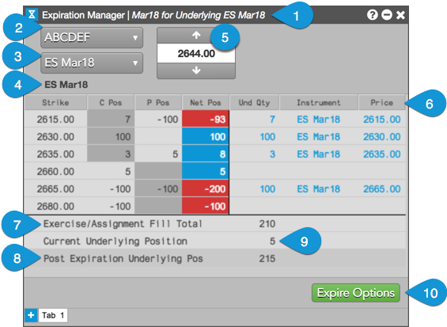

The Expiration Manager widget consists of the following:

Instrument name — Shows the selected expiry and underlying instrument name.
Account selector — Allows you to select an account with open options positions. Only accounts with open options positions are displayed.
Instrument selector — Displays instruments in which you have an open options position. Instruments are displayed by exchange, product, and expiry. When an expiry is selected, your open options positions in the instrument and your current underlying position are displayed in the widget.
Underlying instrument name — Shows the underlying instrument into which the options will expire. Displayed automatically based on your instrument selection.
Underlying futures price field — Shows the last traded price (LTP) of the underlying futures instrument after you select an options expiry in the Instrument selector. This is the price used for expiring your options. You can also manually enter an underlying futures price or use the up and down arrows to set the price.
Expiration Manager columns — The following columns are displayed for the underlying futures price:
Exercise/Assignment Fill Total — Shows your total in-the-money options position at expiration.
Current Underlying Position — Displays you current underlying position in the selected instrument.
Post Expiration Underlying Position — Shows your underlying position after you expire your in-the-money options into the selected futures instrument.
Expire Options button — Expires your in-the-money options into the underlying futures instrument and automatically modifies your position.
CAUTION: You cannot undo the expiration process using the widget. Review your positions before confirming the expiration of your options.
Note: This button is grayed out if your administrator has not given you permission to update positions.
Use the widget tabs to expire options positions for different expiries or accounts using the same Expiration Manager.
Note: When you place focus on a tab, the underlying futures price field automatically updates with the last traded price (LTP).